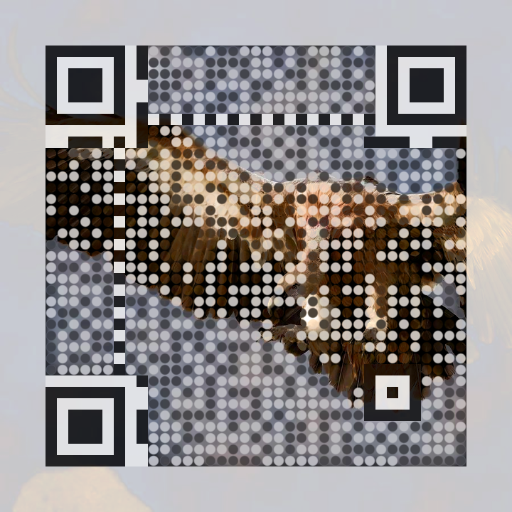
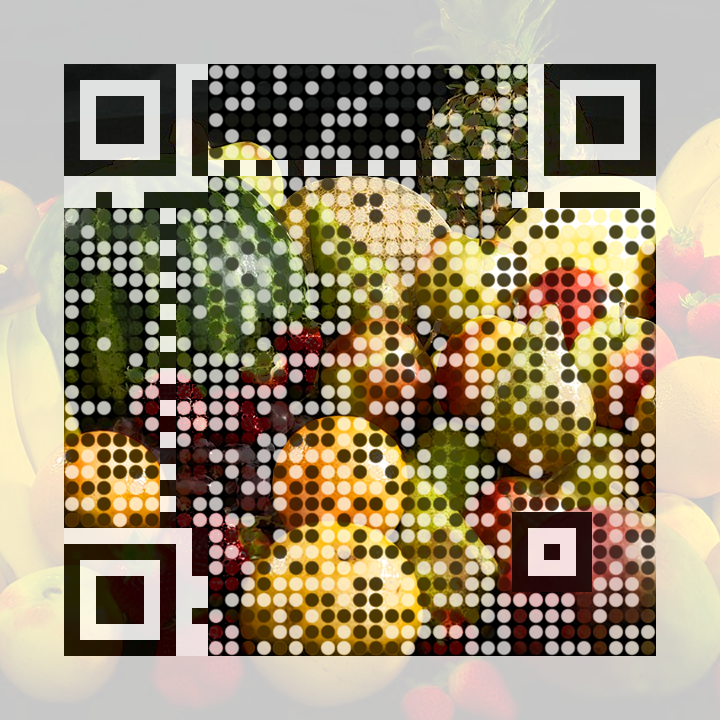
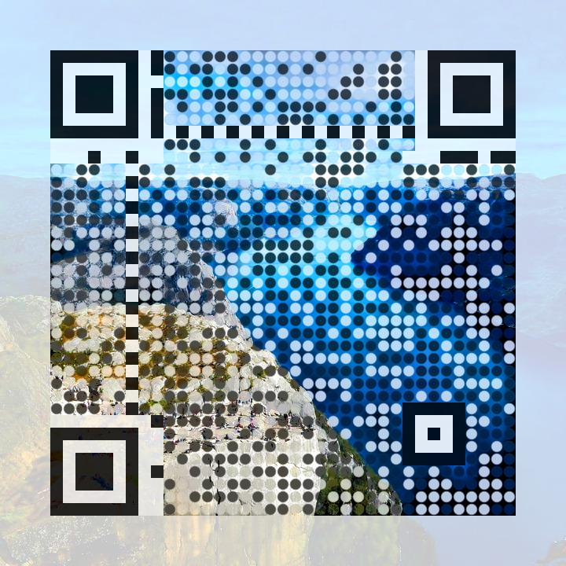

Color photo QR codes
Full-color photographs that still scan. An extension of Andrew Taylor's dithered QR codes; the three codes below all encode his article's URL and scan from this page.



The two freedoms scanners give you
Taylor's generator rests on one freedom: a scanner reads only the center of each module. Shrink the required mark to a dot and the rest of the module is yours. His codes spend that freedom on a Floyd–Steinberg halftone, with a two-pass error diffusion that hides the forced data modules in the dither.
Color comes from a second freedom: scanners are colorblind. Every decoder flattens the image to grayscale before thresholding, but they flatten differently. Some use Rec.601 luma, some average the channels, some read only green. All of these are convex combinations of R, G and B, which gives a guarantee:
If every channel of a dark center sits below the threshold, and every channel of a light center sits above it, the module reads correctly under any grayscale conversion. Hue and saturation never enter into it.
Darkening a pixel by scaling its RGB preserves hue and saturation; lightening by blending toward white preserves hue. So the forced dots stay in the photo's palette. In the river of the landscape code they are navy, not black.
The pipeline
- Round dots, not square modules. Only a dot of radius 0.36 module-widths is fully forced; a smoothstep ring fades the constraint to zero at 0.50. Where the photo already satisfies the bound, forcing does nothing and the dot disappears.
- Channel-bound forcing. Dark centers: scale RGB until max(R,G,B) ≤ 0.30. Light centers: blend toward white until min(R,G,B) ≥ 0.72. Function patterns use tighter bounds (0.14 / 0.88) with the same hue-preserving math, so even the finder squares carry the photo's tint.
- Error diffusion for continuous tone. Taylor pre-diffuses the error from forced modules into the surrounding halftone. Here the neighbors are continuous-tone and absorb error directly: the luminance the dots inject is spread over nearby unconstrained pixels and subtracted from their luminance, chroma untouched. Local average brightness tracks the photo, and the dot grid fades at viewing distance.
- Mask selection. All 8 QR mask patterns are scored against the photo's per-module luminance; the closest match wins.
- Photo-continued quiet zone. The mandatory margin shows the photo blended toward white (min channel ≥ 0.78) instead of blank space.
Error correction is level H, and none of it is spent at generation time. Every center is correct, so the full 30% redundancy remains for glare, folds and bad lighting.
Verification
stress.py decodes each code with two independent decoders, zxing-cpp and OpenCV's QRCodeDetector, under twenty degradations. All three photos pass every case:
| Degradation | Range | bird | fruit | landscape |
|---|---|---|---|---|
| Downscale | 720 → 220 px (≈5 px/module) | PASS | PASS | PASS |
| Gaussian blur | σ = 1–3 at 480 px | PASS | PASS | PASS |
| JPEG recompression | quality 75 / 40 / 20 | PASS | PASS | PASS |
| Brightness / contrast | 0.6× – 1.3× | PASS | PASS | PASS |
| Rotation | 7° and 25° | PASS | PASS | PASS |
| Perspective warp | off-axis camera | PASS | PASS | PASS |
| Print proxy | blur + gamma 1.3 + sensor noise | PASS | PASS | PASS |
The parameter sweep surfaced one useful fact: dot size, not contrast, is the binding constraint. Hard dots of radius 0.32 fail aggressive downscaling at any contrast; at 0.36 every test passes with the mildest color bounds. That is the right trade, since dot size costs less visually than crushing the photo's tones.
Run it
uv run colorqr.py photo.jpg "https://example.com" -o out.png
uv run stress.py out.png "https://example.com" # 20-way robustness checkKnobs: --scale (px/module), --dot-hard/--dot-soft (dot radii), --dark-max/--light-min (channel bounds), --diffuse (error-diffusion strength), --saturation, --mask.
A simulation matrix is not a stranger's phone in bad lighting; for print, raise --dot-hard and widen the channel bounds. Code: github.com/1mentat/qr-code-shenanigans (colorqr.py generates, stress.py verifies, sweep.py searches parameters). Photos from Wikimedia Commons and picsum.photos.